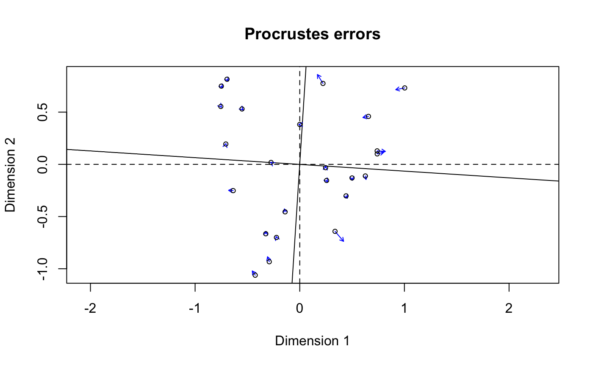

Standardization Methods for Community Ecology
decostand.RdThe function provides some popular (and effective) standardization methods for community ecologists.
Usage
decostand(x, method, MARGIN, range.global, logbase = 2, na.rm=FALSE, ...)
wisconsin(x)
decobackstand(x, zap = TRUE)Arguments
- x
Community data, a matrix-like object. For
decobackstandstandardized data.- method
Standardization method. See Details for available options.
- MARGIN
Margin, if default is not acceptable.
1= rows, and2= columns ofx.- range.global
Matrix from which the range is found in
method = "range". This allows using same ranges across subsets of data. The dimensions ofMARGINmust match withx.- logbase
The logarithm base used in
method = "log".- na.rm
Ignore missing values in row or column standardizations.
- zap
Make near-zero values exact zeros to avoid negative values and exaggerated estimates of species richness.
- ...
Other arguments to the function (ignored).
Details
The function offers following standardization methods for community data:
total: divide by margin total (defaultMARGIN = 1).max: divide by margin maximum (defaultMARGIN = 2).frequency: divide by margin total and multiply by the number of non-zero items, so that the average of non-zero entries is one (Oksanen 1983; defaultMARGIN = 2).normalize: make margin sum of squares equal to one (defaultMARGIN = 1).range: standardize values into range 0 ... 1 (defaultMARGIN = 2). If all values are constant, they will be transformed to 0.rank, rrank:rankreplaces abundance values by their increasing ranks leaving zeros unchanged, andrrankis similar but uses relative ranks with maximum 1 (defaultMARGIN = 1). Average ranks are used for tied values.standardize: scalexto zero mean and unit variance (defaultMARGIN = 2).pa: scalexto presence/absence scale (0/1).chi.square: divide by row sums and square root of column sums, and adjust for square root of matrix total (Legendre & Gallagher 2001). When used with the Euclidean distance, the distances should be similar to the Chi-square distance used in correspondence analysis. However, the results fromcmdscalewould still differ, since CA is a weighted ordination method (defaultMARGIN = 1).hellinger: square root ofmethod = "total"(Legendre & Gallagher 2001).log: logarithmic transformation as suggested by Anderson et al. (2006): \(\log_b (x) + 1\) for \(x > 0\), where \(b\) is the base of the logarithm; zeros are left as zeros. Higher bases give less weight to quantities and more to presences, andlogbase = Infgives the presence/absence scaling. Please note this is not \(\log(x+1)\). Anderson et al. (2006) suggested this for their (strongly) modified Gower distance (implemented asmethod = "altGower"invegdist), but the standardization can be used independently of distance indices.alr: Additive log ratio ("alr") transformation (Aitchison 1986) reduces data skewness and compositionality bias. The transformation assumes positive values, pseudocounts can be added with the argumentpseudocount. One of the rows/columns is a reference that can be given byreference(name of index). The first row/column is used by default (reference = 1). Note that this transformation drops one row or column from the transformed output data. Thealrtransformation is defined formally as follows: $$alr = [log\frac{x_1}{x_D}, ..., log\frac{x_{D-1}}{x_D}]$$ where the denominator sample \(x_D\) can be chosen arbitrarily. This transformation is often used with pH and other chemistry measurenments. It is also commonly used as multinomial logistic regression. DefaultMARGIN = 1uses row as thereference.clr: centered log ratio ("clr") transformation proposed by Aitchison (1986) and it is used to reduce data skewness and compositionality bias. This transformation has frequent applications in microbial ecology (see e.g. Gloor et al., 2017). The clr transformation is defined as: $$clr = log\frac{x}{g(x)} = log x - log g(x)$$ where \(x\) is a single value, and g(x) is the geometric mean of \(x\). The method can operate only with positive data; a common way to deal with zeroes is to add pseudocount (e.g. the smallest positive value in the data), either by adding it manually to the input data, or by using the argumentpseudocountas indecostand(x, method = "clr", pseudocount = 1). Adding pseudocount will inevitably introduce some bias; see therclrmethod for one available solution.rclr: robust clr ("rclr") is similar to regular clr (see above) but allows data that contains zeroes. This method does not use pseudocounts, unlike the standard clr. The robust clr (rclr) divides the values by geometric mean of the observed features; zero values are kept as zeroes, and not taken into account. In high dimensional data, the geometric mean of rclr approximates the true geometric mean; see e.g. Martino et al. (2019) Therclrtransformation is defined formally as follows: $$rclr = log\frac{x}{g(x > 0)}$$ where \(x\) is a single value, and \(g(x > 0)\) is the geometric mean of sample-wide values \(x\) that are positive (> 0).
Standardization, as contrasted to transformation, means that the entries are transformed relative to other entries.
All methods have a default margin. MARGIN=1 means rows (sites
in a normal data set) and MARGIN=2 means columns (species in a
normal data set).
Command wisconsin is a shortcut to common Wisconsin double
standardization where species (MARGIN=2) are first standardized
by maxima (max) and then sites (MARGIN=1) by
site totals (tot).
Most standardization methods will give nonsense results with
negative data entries that normally should not occur in the community
data. If there are empty sites or species (or constant with
method = "range"), many standardization will change these into
NaN.
Function decobackstand can be used to transform standardized
data back to original. This is not possible for all standardization
and may not be implemented to all cases where it would be
possible. There are round-off errors and back-transformation is not
exact, and it is wise not to overwrite the original data. With
zap=TRUE original zeros should be exact.
Value
Returns the standardized data frame, and adds an attribute
"decostand" giving the name of applied standardization
"method" and attribute "parameters" with appropriate
transformation parameters.
References
Aitchison, J. The Statistical Analysis of Compositional Data (1986). London, UK: Chapman & Hall.
Anderson, M.J., Ellingsen, K.E. & McArdle, B.H. (2006) Multivariate dispersion as a measure of beta diversity. Ecology Letters 9, 683--693.
Egozcue, J.J., Pawlowsky-Glahn, V., Mateu-Figueras, G., Barcel'o-Vidal, C. (2003) Isometric logratio transformations for compositional data analysis. Mathematical Geology 35, 279--300.
Gloor, G.B., Macklaim, J.M., Pawlowsky-Glahn, V. & Egozcue, J.J. (2017) Microbiome Datasets Are Compositional: And This Is Not Optional. Frontiers in Microbiology 8, 2224.
Legendre, P. & Gallagher, E.D. (2001) Ecologically meaningful transformations for ordination of species data. Oecologia 129, 271--280.
Martino, C., Morton, J.T., Marotz, C.A., Thompson, L.R., Tripathi, A., Knight, R. & Zengler, K. (2019) A novel sparse compositional technique reveals microbial perturbations. mSystems 4, 1.
Oksanen, J. (1983) Ordination of boreal heath-like vegetation with principal component analysis, correspondence analysis and multidimensional scaling. Vegetatio 52, 181--189.
Examples
data(varespec)
sptrans <- decostand(varespec, "max")
apply(sptrans, 2, max)
#> Callvulg Empenigr Rhodtome Vaccmyrt Vaccviti Pinusylv Descflex Betupube
#> 1 1 1 1 1 1 1 1
#> Vacculig Diphcomp Dicrsp Dicrfusc Dicrpoly Hylosple Pleuschr Polypili
#> 1 1 1 1 1 1 1 1
#> Polyjuni Polycomm Pohlnuta Ptilcili Barbhatc Cladarbu Cladrang Cladstel
#> 1 1 1 1 1 1 1 1
#> Cladunci Cladcocc Cladcorn Cladgrac Cladfimb Cladcris Cladchlo Cladbotr
#> 1 1 1 1 1 1 1 1
#> Cladamau Cladsp Cetreric Cetrisla Flavniva Nepharct Stersp Peltapht
#> 1 1 1 1 1 1 1 1
#> Icmaeric Cladcerv Claddefo Cladphyl
#> 1 1 1 1
sptrans <- wisconsin(varespec)
# CLR transformation for rows, with pseudocount
varespec.clr <- decostand(varespec, "clr", pseudocount=1)
# ALR transformation for rows, with pseudocount and reference sample
varespec.alr <- decostand(varespec, "alr", pseudocount=1, reference=1)
## Chi-square: PCA similar but not identical to CA.
## Use wcmdscale for weighted analysis and identical results.
sptrans <- decostand(varespec, "chi.square")
plot(procrustes(rda(sptrans), cca(varespec)))
